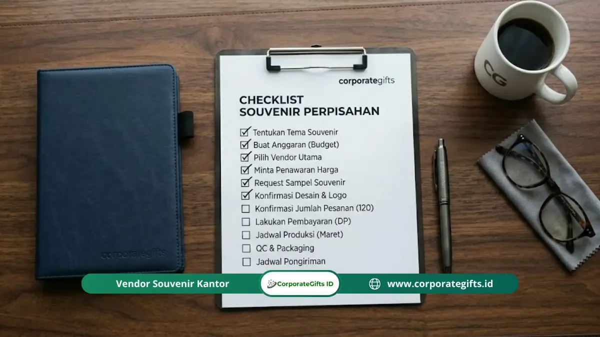

Corporate Gifts ID - Cara memesan souvenir perpisahan kantor yang tepat terdiri dari enam langkah berurutan: menentukan kebutuhan dan anggaran, memilih vendor, meminta sampel, mengonfirmasi desain secara tertulis, memantau produksi, lalu memeriksa kualitas saat barang diterima. Seluruh proses membutuhkan waktu sekitar 2-4 minggu, sehingga pesanan idealnya dibuat 3-4 minggu sebelum hari acara. Langkah yang paling sering dilewati padahal paling krusial adalah meminta sampel produk sebelum produksi massal.
Poin Kunci Cara Memesan Souvenir Perpisahan Kantor:
- 6 Tahapan Berurutan: Alur baku dari perumusan anggaran, kurasi vendor, uji sampel fisik, persetujuan proof tertulis, kontrol produksi, hingga QC akhir.
- Timeline Ideal 3-4 Minggu: Waktu aman untuk memberi ruang revisi desain dan uji sampel tanpa perlu membayar biaya pesanan kilat (rush order).
- Krusialnya Sampel Fisik: Menghindari risiko salah material, degradasi warna cetak, atau cacat dimensi pada produksi massal ratusan unit.
- Persetujuan Desain Tertulis: Wajib memiliki dokumen PO / email konfirmasi mockup digital sebagai rujukan sah jika terjadi perselisihan spesifikasi.
- Inspeksi QC Komprehensif: Pengecekan fisik menyeluruh terhadap unit produk, kelengkapan kuantitas, dan kerapian kemasan sebelum serah terima.
Mengapa Pemesanan Souvenir Perlu Direncanakan Matang?
Pemesanan souvenir perpisahan kantor yang tergesa-gesa atau tidak terencana dengan baik menjadi pemicu utama barang terlambat tiba, spesifikasi cetakan tidak sesuai ekspektasi, atau pembengkakan anggaran akibat biaya lembur produksi kilat (rush order surcharge).
Pembuatan cinderamata custom melewati beberapa simpul tahapan yang saling bergantung: mulai dari ketersediaan stok bahan baku mentah, pembuatan draf visual, persetujuan sampel fisik, setting mesin cetak UV/laser, perakitan kemasan hardbox, hingga proses ekspedisi logistik. Keterlambatan satu hari pada fase persetujuan desain dapat menggeser seluruh jadwal pengiriman secara signifikan. Dengan alur SOP yang matang, tim HR dan GA akan memperoleh produk berkualitas prima dengan harga wajar, aman dari risiko kepanikan menjelang hari perpisahan.
6 Langkah Tepat Memesan Souvenir Perpisahan Kantor
Agar proses pengadaan berjalan transparan dan akuntabel, ikuti enam langkah terstruktur berikut:
Langkah 1: Tentukan Kebutuhan Dasar & Alokasi Anggaran
Sebelum menghubungi vendor mana pun, pastikan panitia internal telah merumuskan parameter teknis berikut:
- Target Penerima: Apakah hadiah ditujukan untuk satu orang eksekutif purna tugas (perorangan) atau dibagikan merata ke seluruh rekan satu divisi (massal)?
- Kuantitas Pesanan: Hitung jumlah pasti ditambah margin cadangan 5% untuk mengantisipasi tamu tak terduga.
- Plafon Biaya: Tentukan batas harga maksimal per unit (misal: Rp50.000 s/d Rp150.000/pax) yang sudah mencakup item souvenir, kustomisasi logo, dan kemasan boks.
- Batas Waktu Penyerahan (Deadline): Tetapkan tanggal barang wajib tiba di kantor, minimal 2-3 hari kerja sebelum seremoni perpisahan diadakan.
Langkah 2: Riset Komparasi dan Seleksi Vendor Kredibel
Kumpulkan minimal tiga proposal penawaran dari vendor penyedia souvenir custom yang berbadan usaha resmi. Periksa rekam jejak portofolio proyek terdahulu, review pelanggan nyata, transparansi minimum order (MOQ), serta syarat pembayaran termin B2B (DP dan pelunasan bertempo).
Langkah 3: Minta dan Evaluasi Sampel Fisik Produk
Jangan pernah langsung menyetujui pesanan massal hanya berpatokan pada katalog foto digital atau mockup layar komputer. Meminta sampel fisik riil memungkinkan Anda memverifikasi:
- Ketebalan dan soliditas material produk (misal: stainless steel tebal vs tipis).
- Ketajaman hasil cetak pad printing, sablon, atau kedalaman grafir laser.
- Kesesuaian saturasi warna cetak dengan standar panduan warna korporat (Pantone/CMYK).
- Kekokohan engsel, resleting, atau kemasan pembungkus luar.

Pengecekan kualitas fisik sampel souvenir custom dan kemasan gift box eksklusif sebelum produksi massal.
Langkah 4: Konfirmasi Desain dan Proofing Tertulis
Kirimkan file logo instansi dalam format vektor kurva tajam (Adobe Illustrator .AI, CorelDraw .CDR, atau Vector PDF). Minta vendor menerbitkan lembar digital layout proof yang memuat detail ukuran logo dalam milimeter, tata letak posisi cetak, serta simulasi warna. Wajib berikan tanda tangan approval digital di atas dokumen proofing resmi. Hindari memberikan persetujuan verbal hanya melalui pesan singkat chat yang rawan miskomunikasi.
Langkah 5: Pantau Progres Produksi Massal secara Berkala
Buat jadwal follow-up terencana dengan Account Executive vendor Anda. Minta pembaruan visual berupa dokumentasi foto atau video saat barang masuk proses pencetakan logo dan perakitan ke dalam boks kemasan. Hal ini memastikan proses berjalan sesuai timeline tanpa ada penundaan mendadak.
Langkah 6: Lakukan Quality Control Menyeluruh Saat Penerimaan
Ketika armada logistik mengantarkan barang ke kantor Anda, jangan langsung menandatangani surat jalan secara terburu-buru. Buka beberapa karton boks secara acak (metode random sampling) untuk memeriksa keutuhan produk, kecocokan jumlah total, fungsi mekanis barang, dan kerapian pita kemasan.
Berapa Lama Waktu dari Pemesanan hingga Souvenir Siap?
Siklus ideal pengadaan souvenir perpisahan custom berkisar antara 2 hingga 4 minggu kalender. Berikut estimasi pembagian alokasi waktu kerja standar:
| Tahapan Kerja Pengadaan | Durasi Ideal | Target Output / Milestone Dokumen |
|---|---|---|
| Riset & Komparasi Vendor | 2 - 3 Hari Kerja | Penerbitan Surat Permintaan Penawaran (RFQ) & Perbandingan Harga |
| Pengiriman & Evaluasi Sampel Fisik | 3 - 5 Hari Kerja | Persetujuan mutu material fisik oleh manajemen internal |
| Proofing Desain & Penerbitan PO | 2 - 3 Hari Kerja | ACC Digital Proof tertulis dan pembayaran uang muka (DP) |
| Produksi Massal & Branding Logo | 7 - 14 Hari Kerja | Barang selesai diproduksi, lolos uji QC pabrik, dan dikemas boks |
| Ekspedisi Pengiriman Logistik | 1 - 3 Hari Kerja | Paket tiba di lokasi kantor pemesan dengan surat jalan resmi |
| Inspeksi QC & Serah Terima Acara | 1 - 2 Hari Kerja | Pengecekan final, pelunasan tagihan, dan souvenir siap dibagikan |
Bagaimana Cara Memilih Vendor Souvenir yang Terpercaya?
Untuk memastikan anggaran perusahaan dikelola dengan aman, pastikan calon mitra vendor Anda memenuhi kriteria berikut:
- Portofolio Riil yang Dapat Diverifikasi: Menampilkan foto dokumentasi produk jadi asli hasil kerjaan mereka, bukan gambar 3D render atau comotan internet.
- Transparansi Kebijakan Sampel: Vendor profesional dengan senang hati mengirimkan dummy produk atau sampel contoh untuk dinilai oleh panitia.
- Rincian Biaya Tanpa Biaya Tersembunyi: Surat penawaran harga memuat breakdown detail ongkos cetak film/plat, packing kayu pengiriman, serta PPN/PPH faktur pajak jika dibutuhkan instansi.
- Layanan Komunikasi Responsif: Memiliki customer support dan project officer dedicated yang mudah dihubungi saat koordinasi revisi.
- Garansi Ketidaksesuaian (Warranty Clause): Berani menjamin penggantian unit baru tanpa biaya tambahan jika ditemukan cacat cetak atau kerusakan fisik saat tiba di tujuan.
Checklist Quality Control (QC) Saat Serah Terima
Gunakan daftar periksa praktis berikut saat tim panitia menerima kiriman souvenir di kantor:
| Parameter Pemeriksaan | Standar Kelayakan yang Diharapkan | Tindakan Jika Terjadi Cacat |
|---|---|---|
| Akurasi Kuantitas Unit | Jumlah total box dan isi di dalamnya 100% pas sesuai invoice/PO | Catat selisih kekurangan pada lembar tanda terima ekspedisi |
| Presisi Cetak Logo | Posisi logo simetris, tidak miring, tidak belepotan, dan warna solid | Foto sampel produk yang cacat dan klaim garansi ganti unit |
| Integritas Fisik Produk | Bodi produk mulus bebas baret, tidak penyok, dan engsel berfungsi baik | Kumpulkan unit bermasalah dalam satu kardus retur |
| Kondisi Box & Kemasan Luar | Hardbox rapi, pita tidak kusut, dan busa pelindung tidak sobek | Minta vendor mengirimkan box kemasan cadangan pengganti |
Pertanyaan Seputar Cara Memesan Souvenir Perpisahan Kantor (FAQ)
Kesimpulan: Wujudkan Cinderamata Berkesan dengan SOP Rapi
Memesan souvenir perpisahan kantor yang berkesan bukanlah perkara sulit jika Anda menjalankan alur perencanaan secara disiplin. Enam langkah kunci mulai dari identifikasi anggaran, kurasi vendor berbadan usaha resmi, uji sampel fisik, approval proof tertulis, kontrol produksi, hingga QC akhir adalah jaminan keamanan investasi Anda.
Hindari menunda pesanan hingga detik-detik terakhir. Bersama Corporate Gifts ID, nikmati kemudahan konsultasi pengadaan merchandise korporat, katalog produk terlengkap, garansi mutu cetak presisi, dan jaminan pengiriman tepat waktu untuk menyempurnakan momen perpisahan rekan kerja Anda.